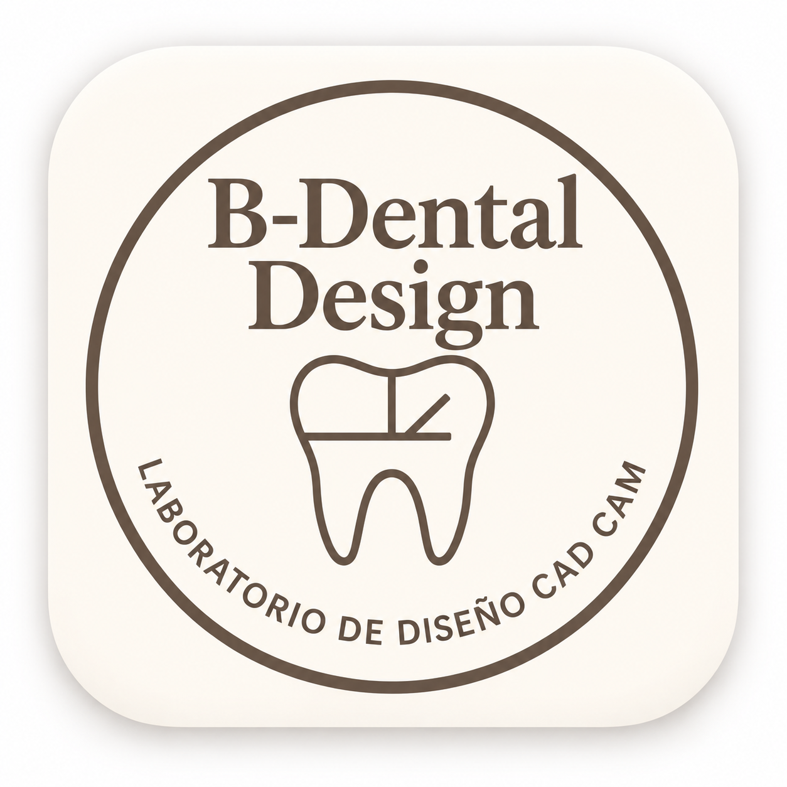
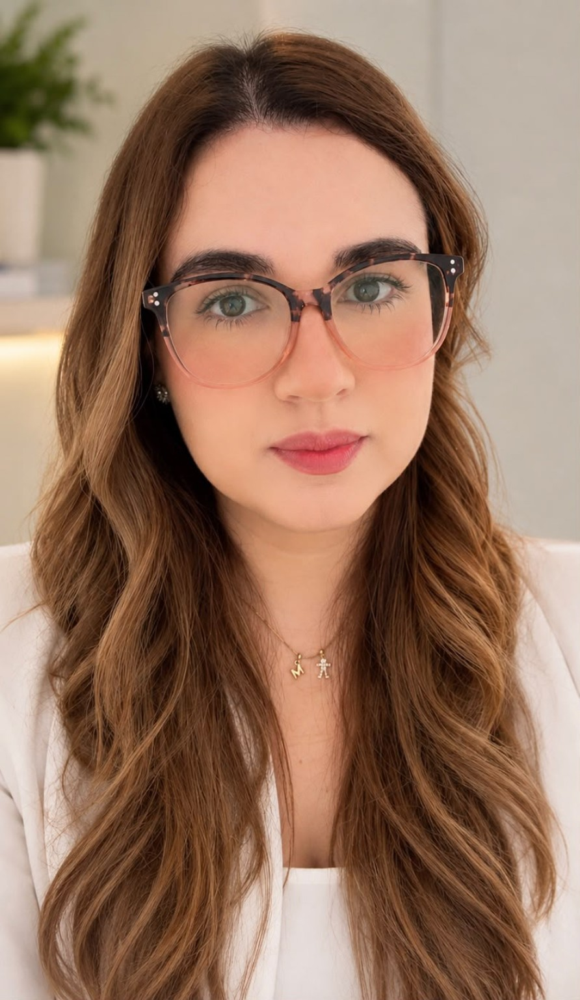

01
CA
Clear Aligners
Digital setups, model preparation and aligner-ready designs developed around your clinical prescription and production workflow.
ORTHODONTICS · CAD/CAM
B-Dental DesignDigital Dental Design · CAD/CAMDIGITAL DENTAL DESIGN · CAD/CAM
B-Dental Design works as an extension of your dental lab, providing focused remote CAD/CAM support when you need reliable design capacity.
With more than 12 years of CAD/CAM experience, we support restorative, aligner, denture and model workflows with clear communication and production-ready files.
Your workflow. Your standards. Dedicated digital support.
01 · SERVICES
A focused remote design service for dental laboratories that need consistent quality, dependable communication and extra CAD capacity without adding unnecessary overhead.
Digital setups, model preparation and aligner-ready designs developed around your clinical prescription and production workflow.
ORTHODONTICS · CAD/CAMPrecise digital restorative design focused on anatomy, fit, function and reliable downstream production.
RESTORATIVE · DIGITAL DESIGNDigital full-denture workflows prepared with careful attention to form, function, occlusion and manufacturing needs.
PROSTHETICS · CAD/CAMFlexible CAD/CAM support for dental laboratories, including model preparation, case-specific digital design and overflow support when your internal workload increases.
DIGITAL WORKFLOW · STL02 · SELECTED WORK
A selection of B-Dental Design workflows showing the type of digital work handled for laboratory production.
FOR DENTAL LABS
Built for laboratories that want an experienced designer they can communicate with directly — whether for ongoing support, overflow work or a first test case.
Work directly with one designer who learns your preferences, production requirements and case expectations.
Add external design capacity when case volume increases without changing your internal production structure.
Evaluate the workflow, communication and design fit with a real case before deciding on a longer-term collaboration.
Case information and files are treated as confidential production material and handled only for the requested design work.
03 · WORKFLOW
A straightforward remote workflow designed to integrate with your lab and keep cases moving without unnecessary complexity.
Share the scan, prescription and case requirements through the agreed channel.
The case is designed around your instructions, anatomy, fit, function and manufacturing requirements.
Review the design and receive the final files prepared for your production workflow.

04 · ABOUT THE DESIGNER
B-Dental Design
I’m Fabiola Bonilla Masís, a Certified Dental Technician and Dental CAD Designer specialized in digital dental design, with more than 12 years of experience working with CAD/CAM technology and digital workflows for the dental industry.
Throughout my career I have developed experience in different areas of dental design, including clear aligners, restorative design, full dentures, dental models and digital case detailing.
I have had the opportunity to work with recognized dental companies and laboratories, including projects for companies in the United States, developing cases remotely and collaborating directly with doctors, technicians and laboratories to transform prescriptions and digital scans into precise, functional, production-ready designs.
My experience includes specialized platforms and tools such as Exocad, 3Shape, SoftSmile, ArchForm, Meshmixer, Medit and Sirona, allowing me to adapt to different workflows and client requirements.
MY APPROACH
At B-Dental Design I combine dental-digital experience, precision and attention to detail to provide a reliable and efficient design service.
Every case is carefully reviewed according to the doctor’s and laboratory’s instructions, aiming not only to meet technical requirements but also to simplify production and contribute to a high-quality result.
My goal is to help you optimize your digital workflow, save time and turn your digital cases into precise designs that are ready to work with.
START WITH A REAL CASE
Send a case and its requirements. We can start with a test case so you can evaluate the workflow before moving forward.